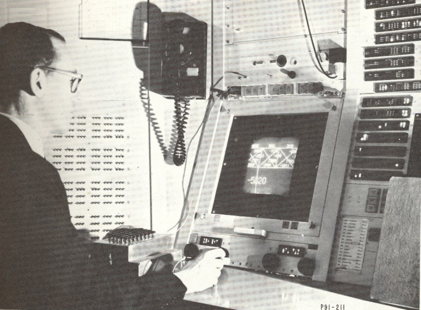

1960 yýlýnda insan-bilgisayar iletiþiminin sadece delikli kaðýt ve þeritle sýnýrlý kalmasý ve etkileþimli olmayýþý birçok araþtýrmacý ve tasarýmcýyý düþündürdü ve yeni arayýþlara yöneltti. Ýstenilen, insanýn sahip olduðu beþ duyuyu da bu iletiþimde teknolojinin elverdiði ölçüde etkileþimli olarak kullanmasý idi.
Bu düþünce ile yola çýkanlar arasýnda ABD'ndeki MIT Üniversitesi'nde 1960 yýlýnda doktora çalýþmalarýna baþlayan Ivan Edward Sutherland ve hocasý Profesör Stephen Anson Coons da bulunmaktaydý. Bu araþtýrmacýlar, üniversitelerinde geliþtirilen TX-2 bilgisayarýný kullandýlar. Ýlk defa olarak bilgisayardan görüntülü bir çýktý almak üzere bir radar ekranýný sayýsal hale getirdiler. Grafik bilgileri girebilmek için bir ýþýk kalemi tasarladýlar ve ürettiler. Bu sayede doðrudan ekran üzerinden, geliþtirdikleri yazýlýmý da kullanarak etkileþimli olarak grafik bilgilerini girebildiler. Diðer sayýsal bilgileri girebilmek için de anahtar, düðme, buton gibi deðiþik aygýtlarý kullandýlar. Resim 5'de Sutherland'ý geliþtirdiði ilk CAD iþ istasyonu önünde çalýþýrken görüyorsunuz [1].

Resim 5: Sutherland ilk CAD iþ istasyonu önünde çalýþýyor
Bu sistemde kullanýlan ýþýk kalemini ve yapýsýný Resim 6'da görebilirsiniz. Iþýk kalemi ekrandaki ýþýðý algýladýðý zaman, bilgisayarda bir duraklama (interrupt) meydana getirir ve geliþtirilmiþ yazýlým yardýmý ile ekrandaki imleç ýþýk kalemini takip eder veya istenilen grafik iþlemi yerine getirir.